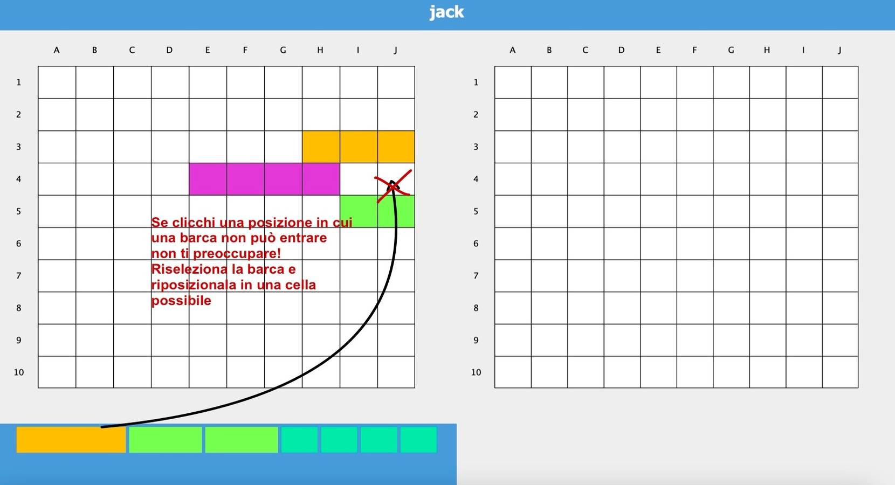
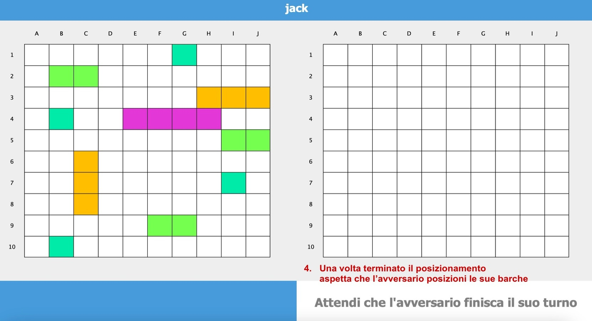
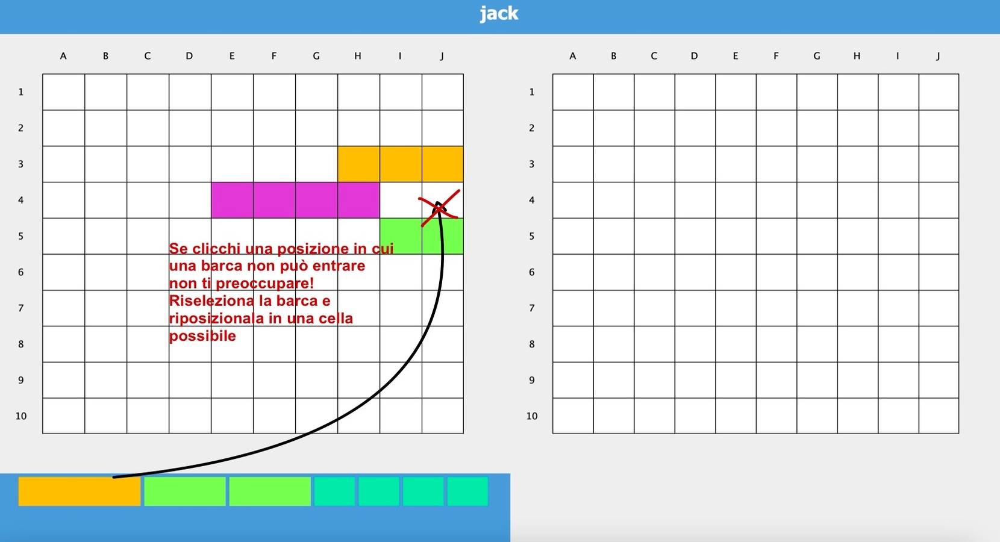
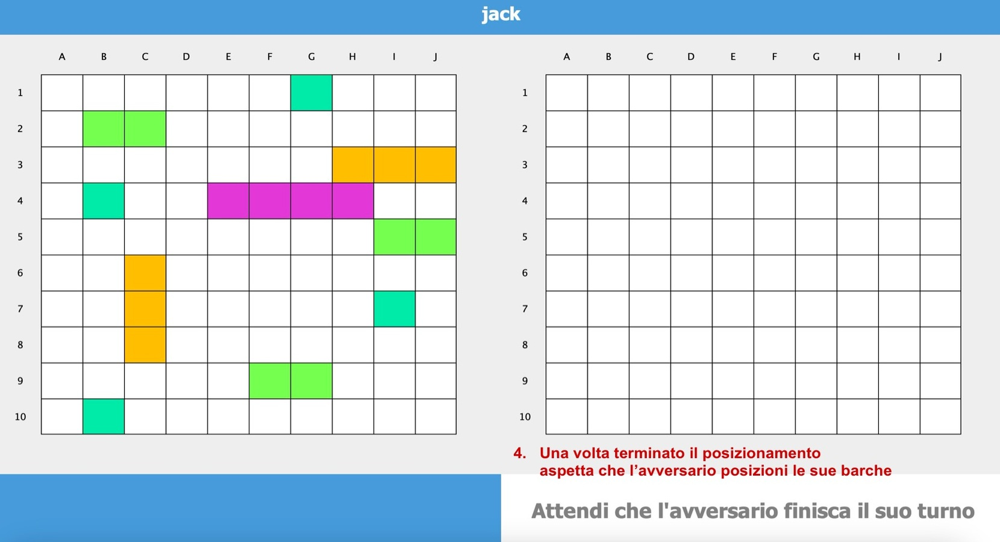

Regole del gioco
La battaglia navale è un gioco da tavolo in cui due giocatori competono per distruggere le navi nemiche.
Ogni giocatore dispone di una griglia di gioco su cui posizionare le proprie navi in modo strategico.
A turno, i giocatori sparano ai quadrati della griglia avversaria cercando di colpire le navi nemiche.
Come giocare
Per giocare, segui i seguenti passaggi:
- Posiziona le tue navi sulla tua griglia di gioco.
- Scelta una casella sulla griglia avversaria e sparaci.
- Vince il giocatore che distrugge per primo tutte le navi nemiche.
Fase di posizionamento
Nella fase di posizionamento, ogni giocatore posiziona le proprie navi sulla propria griglia di gioco.
Le navi possono essere posizionate verticalmente o orizzontalmente e non devono sovrapporsi.
Per capire meglio ecco delle immagini rappresentative:
 



Fase di gioco
Nella fase di gioco, i giocatori si alternano nel cercare di colpire le navi avversarie.
I colori che si visualizzeranno nella griglia di gioco avversaria rappresentano:
- Blu: è stata colpita l´acqua
- Rosso: un pezzo della barca è stato colpito
- Nero: una barca è stata affondata
Nella parte in basso a sinistra verrà visualizzato l´avanzamento del gioco. Di seguito un esempio di come si mostra la fase di gioco